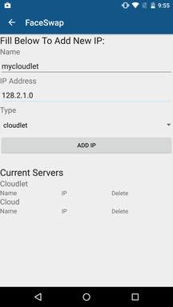
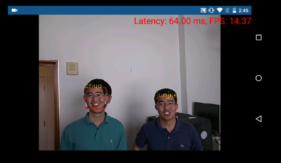

FaceSwap Android Client User Guide
Before using FaceSwap Android client, please make sure all FaceSwap backend server has been started
1. Add FaceSwap Server IPs:
Click on Menu Button on the top right corner and select 'Manage Servers'. Fill in the name and ip address. Select the server's category ("cloudlet" or "cloud") for easy-of-management.

2. Select a specific server by type and name
3. Add Training Images (3 different methods)
- Collect Images: Open smartphone camera to collect training images
- From Local File: Load a FaceSwap dataset from local directory
- From Google Drive: Load a FaceSwap dataset from Google Drive
4. Choose faces to substitude:
The substituded face is the processed image. The different between the substituded face and the original face is the end-to-end latency. For example, in below image, the person on the left is being substituded by the face of the person on the right. The face overlay on the left is a delayed face image from the face on the right. The total delay time is the end-to-end latency of the system.

5. Run Demo
FaceSwap Server User Guide
FaceSwap Android server is available on Amazon EC2. The AMI name is "FaceSwap-server-release". The AMI ID in EC2 Oregon is ami-31c43351.
To use the image, simply start a server from the AMI. The recommended Amazon instance is m4.large. FaceSwap backend will automatically start itself once the image is booted.